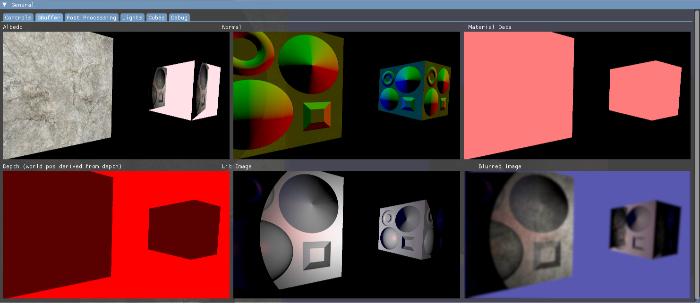
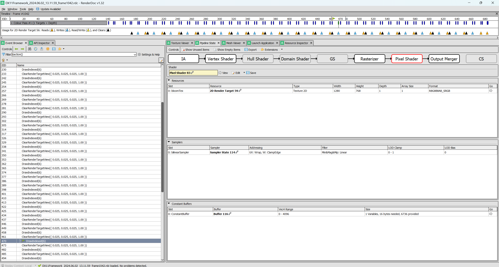

Deferred Lighting Project
- C++
- HLSL
- D3D11
- Render Doc
This project was completed as part of the 'Advanced Real-Time Rendering module' at the University of Staffordshire. The primary goal of this project was to implement deferred lighting as well as PBR, normal mapping and a variety of post-processing effects including depth of field, sharpness, chromatic abberation and other colourspace effects.
A demo of the renderer can be seen below:
GBuffer
A GBuffer is essential for deferred rendering. The structure of the GBuffer is dependant on the exact requirements of the solution. For mine, I wanted to support normal mapping and material properties such as individual specularity values. Additionally, I wanted to avoid requiring an additional texture for world position as this would require additional draw calls for each object to be rendered. As such, when world position was needed in lighting calculations, I made use of the depth buffer and simply unpacked the data. This also saves an additional texture read.
One of my aims was to use a render of the scene as the albedo texture for some objects. I also wanted this render to be lit and for the object using the render as an albedo to be lit. This necesitated that I compute lighting for some objects multiple times.
The structure of my GBuffer can be seen below:

Post-Processing
In order to create a depth of field effect, the rendered scene must be blurred. For this, I used a Gaussian Blur shader that operates on a half resolution texture of the rendered scene. This reduces the computational expense of the blur effect and also creates a more exagerated blur with fewer passes.
//main post Post-Processing
float depth = depthTx.Sample(samLinear, IN.Tex).r;
depth = (depth - 0.99f) * 100.f;
float blurFactor = GetBlurFactor(depth);
float2 rOffset = float2(0.005f, 0.005f);
float2 gOffset = float2(-0.002f, -0.002f);
float2 bOffset = float2(0.003f, 0.003f);
float2 vecFromCentre = IN.Tex - float2(0.5f, .5f);
float distanceFromCentre = length(vecFromCentre);
float tex1r = tx1.Sample(samLinear, saturate(IN.Tex + rOffset * distanceFromCentre * abberationStrength)).r;
float tex1g = tx1.Sample(samLinear, saturate(IN.Tex + gOffset * distanceFromCentre * abberationStrength)).g;
float tex1b = tx1.Sample(samLinear, saturate(IN.Tex + bOffset * distanceFromCentre * abberationStrength)).b;
float tex2r = tx2.Sample(samLinear, saturate(IN.Tex + rOffset * distanceFromCentre * abberationStrength)).r;
float tex2g = tx2.Sample(samLinear, saturate(IN.Tex + gOffset * distanceFromCentre * abberationStrength)).g;
float tex2b = tx2.Sample(samLinear, saturate(IN.Tex + bOffset * distanceFromCentre * abberationStrength)).b;
float4 tex1 = float4(tex1r, tex1g, tex1b, 1.0f);
float4 tex2 = float4(tex2r, tex2g, tex2b, 1.0f);
float4 finalColor = lerp(tex1, tex2, saturate(blurFactor));
//saturation
float luminance = finalColor.x*0.2125+finalColor.y*0.7153+finalColor.z*0.07121;
float3 saturationColor = lerp(float3(luminance, luminance,luminance), finalColor.xyz, float3(saturation,saturation,saturation));
//contrast
float3 contrastColor = contrast * (saturationColor - float3(0.5f, 0.5f, 0.5f)) + float3(0.5f, 0.5f, 0.5f) + brightness;
//apply contrast and brightness
finalColor.xyz = contrastColor;
//gama correction
finalColor.xyz = pow(finalColor, 1.2);
if(useACES==1)
{
finalColor.xyz = ACESFilm(finalColor.xyz);
}
return finalColor;
//sharpness
float width, height;
tx1.GetDimensions(width, height);
float2 texelSize = float2(1.0 / width, 1.0 / height);
float2 offsets[9] =
{
float2(-texelSize.x, -texelSize.y),
float2(0, -texelSize.y),
float2(texelSize.x, -texelSize.y),
float2(-texelSize.x, 0),
float2(0, 0),
float2(texelSize.x, 0),
float2(-texelSize.x, texelSize.y),
float2(0, texelSize.y),
float2(texelSize.x, texelSize.y)
};
float4 sharpenedColor = float4(0, 0, 0, 0);
for (int i = 0; i < 9; i++)
{
sharpenedColor += tx1.Sample(samLinear, IN.Tex + offsets[i]) * kernel[i];
}
float4 originalColor = tx1.Sample(samLinear, IN.Tex);
float4 finalColor = lerp(originalColor, sharpenedColor, sharpness);
return finalColor;
Who Did What?
ImGUI File Browser by AirGuanZ
When Was it Made?
This project was worked on from December 2024 - February 2025
What Went Well?
My impelementation of deferred lighting achieves everything that I wished to achieve. It is flexible in nature, shown by the fact that any number of additional lights and objects can be added to the scene and behave properly.
What Could Be Better?
The project would benefit from the implementation of Physically Based Shading and GLTF loading. However, I have previously implemented both of these in my Vulkan Cloud Volumetrics Project. Additionally, I could have implemented more robust depth of field techniques and included more material information in my GBuffer.
D3D11 Environment Project
- C++
- HLSL
- D3D11
- Render Doc
This project involved creating a basic rendering pipeline using D3D11 and was completed as part of Staffordshire University's 'Real Time Rendering' module. The pipeline features bloom, water shading using Gerstner waves, transparency, terrain generation, fog, model and texture loading and more.
Bloom
I implemented bloom into my rendering pipeline using multiple post-processing render targets which I created alongside the use of three shaders. The first of these shaders sampled the texture of the initial rendered scene and then checked the luminance of each pixel and set it to black if it was not bright enough. The second shader performs a Gaussian Blur on the texture generated by the previous shader. The blur can either be performed horizontally or vertically in any one pass. I set up the blurring so that the texture is passed back and forth between the horizontal and vertical blur until the texture has been blurred a total of 20 times as this is what I found to produce an adequate result and not slow down rendering too much. The third shader is responsible for a variety of post-process effects but importantly, it blends the blurred texture with the orignial render as to create the bloom effect.
Terrain Generation
My project features terrain generation via a heightmap. This is done by generating a flat triangle grid which can have its height, width, depth and the number of rows and columns to use in generation. When the terrain is drawn it uses a seperate shader which uses the world height of the vertex its drawing to decide what textures to sample from and it also blends across each texture smoothly.
Water Shading
After completing my terrain generation, I decided that I wanted to re-use some of the same principles to generate a flat plane mesh of triangles which I would stylise using a water shader. The plane mesh was easy enough to generate and involved restructuring the code used for terrain generation to cut out the actual deformation. This plane then gets rendered with a unique water shader which uses Gerstner Waves in the vertex shader in order to simulate realistic waves. I used two of these wave functions for the water in my game but more complex waves would use more. For the pixel shader, I sample a Voronoi noise texture and make use of the Schlick Fresnel approximation in order to create the look of basic stylised water.
Transparency
In order to support transparency, I needed to be able to order transparent objects by the distance from the camera. My solution uses a JSON file to store the scene data which is then loaded into a scene graph. Each time the draw function is called, the scene graph is iterated over and the transparent objects are selected to be rendered after every other object. Given the list of transparent objects, they are then sorted every draw call by distance from the camera and then rendered in that order to avoid common issues with transparency. The below code shows how transparent objects are drawn.
void DX11Framework::DrawSceneGraph(SceneNode& node, ID3D11DeviceContext* immediateContext, ConstantBuffer cbData, ID3D11Buffer* constantBuffer, ID3D11VertexShader* vertexShader, ID3D11PixelShader* pixelShader)
{
//draw objects normally if not transparent
if (node.objectData.GetName() != "Root")
{
std::string str =node.objectData.GetName();
//if transparent dont draw
if (node.objectData.GetTransparency().x == 0.0f || node.objectData.GetTransparency().y == 0.0f || node.objectData.GetTransparency().z == 0.0f)
{
immediateContext->OMSetBlendState(0, 0, 0xffffffff);
node.objectData.Draw(immediateContext, cbData, constantBuffer, vertexShader, pixelShader);
}
else
{
m_TransparentObjects.push_back(node.objectData);
}
}
//call recursively for children of current node
for (int i =0;iGetView()));
XMVECTOR cameraPosition = cameraWorld.r[3];
std::map goDistanceMap;
//calculate distance of object from camera
for (int i = 0; i < m_TransparentObjects.size(); i++)
{
XMMATRIX object = XMLoadFloat4x4(m_TransparentObjects[i].GetWorld());
XMVECTOR objectPos = object.r[3];
XMVECTOR distance = objectPos- cameraPosition;
float distanceScalar = XMVectorGetX(XMVector3Length(distance));
goDistanceMap[i] = distanceScalar;
}
//sort objects in terms of distance
for (int i = 0; i < m_TransparentObjects.size(); i++)
{
for (int j = 0; j < m_TransparentObjects.size() - i - 1; j++)
{
float distanceJ = goDistanceMap[j];
float distanceJPlus1 = goDistanceMap[j + 1];
if (distanceJ < distanceJPlus1)
{
std::swap(m_TransparentObjects[j], m_TransparentObjects[j + 1]);
std::swap(goDistanceMap[j], goDistanceMap[j + 1]);
}
}
}
//draw transparent objects
for (int i = 0; i < m_TransparentObjects.size(); i++)
{
FLOAT blendFactor[4] = { m_TransparentObjects[i].GetTransparency().x, m_TransparentObjects[i].GetTransparency().y,
m_TransparentObjects[i].GetTransparency().z, m_TransparentObjects[i].GetTransparency().w };
immediateContext->OMSetBlendState(_transparency, blendFactor, 0xffffffff);
m_TransparentObjects[i].Draw(immediateContext, cbData, constantBuffer, vertexShader, pixelShader);
}
m_TransparentObjects.clear();
}
Debugging
This project found me using a GPU profiler for the first time which I found to be extremely useful and intriguing. I used RenderDoc in order to check that correct data was being sent in constant buffers on certain draw calls, what textures were being created and sampled and other things. I found it especially useful when trying to get the bloom post-process effect working due to the back and forth nature of passing textures between render targets.

Who Did What?
Original Framework by Staffs Uni
ACES Film Map Curve by Krzysztof Narkowicz
When Was it Made?
This project was worked on from October - December 2023
What Went Well?
I believe that I was able to implement many features into this project at good quality given the time frame. I am particularly proud of implementing bloom as it familiarised me with passing textures between render targets and generally handling a more complex draw cycle due to render targets having to render to textures instead of the framebuffer.
What Could Be Better?
The way light rendering is set up could be better. This is because in a commercial engine, each light would result in another draw call due to having to calculate the effect each light. In my setup, there is a singular lighting pass which involves pushing all the lights on the constant buffer and calculating all the lighting at once. This means there is a hardcoded limit on the number of lights that are passed through due to the need to use an array. I have set this limit to 100 which also means I am reserving space for 100 lights even when there may not be that many passed through.